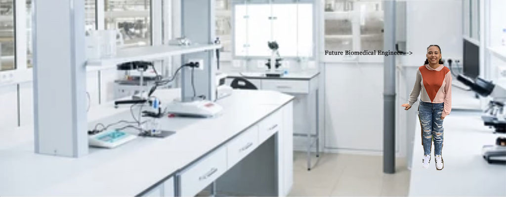

Hey everyone! My name is Zaria and I am a rising senior at Jamesville-DeWitt High School in Jamesville, NY. I decided to take this class because I want to major in biomedical engineering and I have always been interested in computer science. I thought this class would be a nice introduction. I love to build things, especially the problem-solving aspect of it. Outside of school I play the cello, read comic books, and watch horror films with my three brothers.
I am looking forward to meeting everyone!
My favorite hobby is listening to music. My favorite genre is R&B but I listen to many others.
Some of my favorite artists are:
©2022